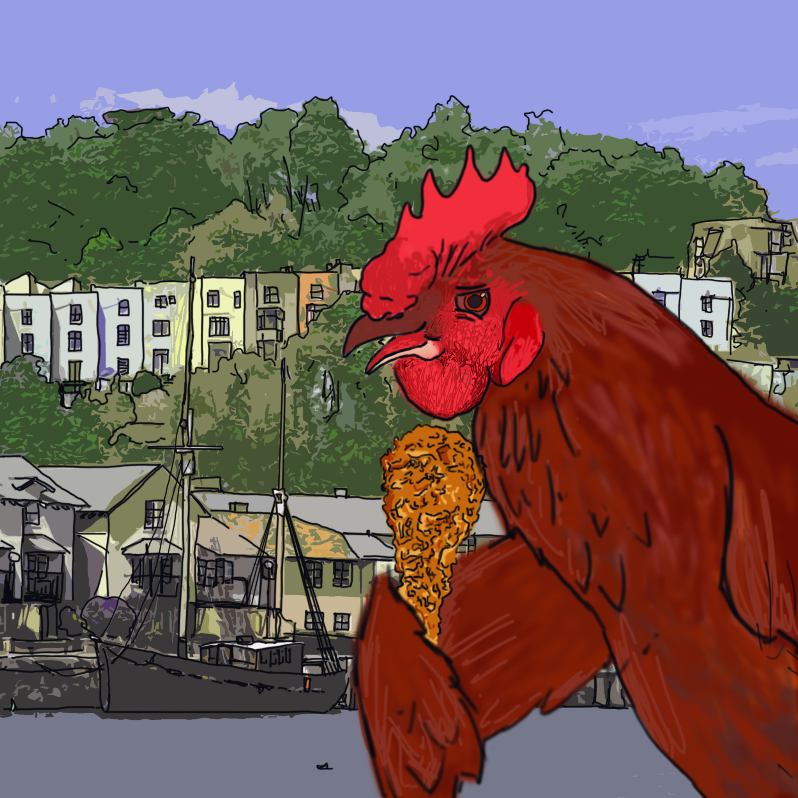

Welcome, friends, to Bristol Fried Chicken. Here at Bristol Fried Chicken our aim was to create a central hub for all things fried chicken related in Bristol. Here you can find local fried chicken shops, post reviews, play games, and much, much more.

This is our mascot, Clucky G. Aside from eating fried chicken, he loves travelling around the country teaching kids and parents the wonders of fried chicken.